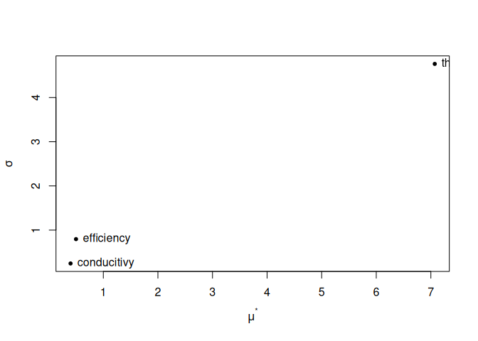

Conduct sensitivity analysis and Bayesian calibration of EnergyPlus models.


Installation
Currently, epScan is not on CRAN. You can install the development version from GitHub.
# install.packages("remotes")
remotes::install_github("ideas-lab-nus/epScan")Get started
Sensitivity Analysis
Create a SensitivityJob object:
# use an example file from EnergyPlus v8.8 for demonstration here
path_idf <- file.path(eplusr::eplus_config(8.8)$dir, "ExampleFiles", "5Zone_Transformer.idf")
path_epw <- file.path(eplusr::eplus_config(8.8)$dir, "WeatherData", "USA_CA_San.Francisco.Intl.AP.724940_TMY3.epw")
# create a `SensitivityJob` class which inheris from eplusr::ParametricJob class
sen <- sensi_job(path_idf, path_epw)
#> Adding an object in class `Output:SQLite` and setting its `Option Type` to `SimpleAndTabular` in order to create SQLite output file.Set sensitivity parameters using $param() or $apply_measure().
- Using
$param()
# set parameter using similar syntax to `Idf$set()` in eplusr
sen$param(
# For adding a single object field as parameter
# Syntax: Object = list(Field = c(Min, Max, Levels))
`Supply Fan 1` = list(Fan_Total_Efficiency = c(0.1, 1.0, 5)),
# For adding a class field as parameter
Material := list(
Thickness = c(min = 0.01, max = 0.08, levels = 5),
Conductivity = c(min = 0.01, max = 0.6, levels = 6)
),
# use `.names` to give names to each parameter
.names = c("efficiency", "thickness", "conducitivy"),
# See `r` and `grid_jump` in `sensitivity::morris`
.r = 8, .grid_jump = 1
)- Using
$apply_measure()
# first define a "measure"
my_actions <- function (idf, efficiency, thickness, conducitivy) {
idf$set(
`Supply Fan 1` = list(Fan_Total_Efficiency = efficiency),
Material := list(Thickness = thickness, Conductivity = conducitivy)
)
idf
}
# then apply that measure with parameter space definitions as function arguments
sen$apply_measure(my_actions,
efficiency = c(0.1, 1.0, 5),
thickness = c(0.01, 0.08, 5),
conducitivy = c(0.1, 0.6, 6),
.r = 8, .grid_jump = 1
)
#> -- EnergPlus Parametric Simulation Job ------------------------------------
#> * Seed: 'C:\EnergyPlusV8-8-0\ExampleFiles\5Zone_Transformer.idf'
#> * Weather: 'C:\EnergyPlusV8-8-0\WeatherData\USA_CA_San.Francisco.Intl....
#> * EnergyPlus Version: '8.8.0'
#> * EnergyPlus Path: 'C:\EnergyPlusV8-8-0'
#> Applied Measure: 'my_actions'
#> Parametric Models [32]:
#> [01]: '1_effic(0.775)_thick(0.045)_condu(0.4)'
#> [02]: '2_effic(0.775)_thick(0.045)_condu(0.3)'
#> [03]: '3_effic(0.55)_thick(0.045)_condu(0.3)'
#> [04]: '4_effic(0.55)_thick(0.0275)_condu(0.3)'
#> [05]: '5_effic(0.325)_thick(0.045)_condu(0.3)'
#> [06]: '6_effic(0.55)_thick(0.045)_condu(0.3)'
#> [07]: '7_effic(0.55)_thick(0.045)_condu(0.4)'
#> [08]: '8_effic(0.55)_thick(0.0275)_condu(0.4)'
#> [09]: '9_effic(0.55)_thick(0.045)_condu(0.4)'
#> [10]: '10_effic(0.55)_thick(0.045)_condu(0.5)'
#> [11]: '11_effic(0.775)_thick(0.045)_condu(0.5)'
#> [12]: '12_effic(0.775)_thick(0.0275)_condu(0.5)'
#> [13]: '13_effic(0.55)_thick(0.08)_condu(0.1)'
....Get samples
sen$samples()
#> case efficiency thickness conducitivy
#> <int> <num> <num> <num>
#> 1: 1 0.775 0.0450 0.4
#> 2: 2 0.775 0.0450 0.3
#> 3: 3 0.550 0.0450 0.3
#> 4: 4 0.550 0.0275 0.3
#> 5: 5 0.325 0.0450 0.3
#> 6: 6 0.550 0.0450 0.3
#> 7: 7 0.550 0.0450 0.4
#> 8: 8 0.550 0.0275 0.4
#> 9: 9 0.550 0.0450 0.4
#> 10: 10 0.550 0.0450 0.5
#> 11: 11 0.775 0.0450 0.5
#> 12: 12 0.775 0.0275 0.5
#> 13: 13 0.550 0.0800 0.1
#> 14: 14 0.550 0.0625 0.1
#> 15: 15 0.550 0.0625 0.2
#> 16: 16 0.775 0.0625 0.2
#> 17: 17 0.100 0.0100 0.2
#> 18: 18 0.325 0.0100 0.2
....Run simulations and calculate statistic indicators
# run simulations in temporary directory
sen$run(dir = tempdir(), echo = FALSE)
#> -- EnergPlus Parametric Simulation Job ------------------------------------
#> * Seed: 'C:\EnergyPlusV8-8-0\ExampleFiles\5Zone_Transformer.idf'
#> * Weather: 'C:\EnergyPlusV8-8-0\WeatherData\USA_CA_San.Francisco.Intl....
#> * EnergyPlus Version: '8.8.0'
#> * EnergyPlus Path: 'C:\EnergyPlusV8-8-0'
#> Applied Measure: 'my_actions'
#> Parametric Models [32]:
#> [01]: '1_effic(0.775)_thick(0.045)_condu(0.4)' <-- SUCCEEDED
#> [02]: '2_effic(0.775)_thick(0.045)_condu(0.3)' <-- SUCCEEDED
#> [03]: '3_effic(0.55)_thick(0.045)_condu(0.3)' <-- SUCCEEDED
#> [04]: '4_effic(0.55)_thick(0.0275)_condu(0.3)' <-- SUCCEEDED
#> [05]: '5_effic(0.325)_thick(0.045)_condu(0.3)' <-- SUCCEEDED
#> [06]: '6_effic(0.55)_thick(0.045)_condu(0.3)' <-- SUCCEEDED
#> [07]: '7_effic(0.55)_thick(0.045)_condu(0.4)' <-- SUCCEEDED
#> [08]: '8_effic(0.55)_thick(0.0275)_condu(0.4)' <-- SUCCEEDED
#> [09]: '9_effic(0.55)_thick(0.045)_condu(0.4)' <-- SUCCEEDED
#> [10]: '10_effic(0.55)_thick(0.045)_condu(0.5)' <-- SUCCEEDED
#> [11]: '11_effic(0.775)_thick(0.045)_condu(0.5)' <-- SUCCEEDED
#> [12]: '12_effic(0.775)_thick(0.0275)_condu(0.5)' <-- SUCCEEDED
#> [13]: '13_effic(0.55)_thick(0.08)_condu(0.1)' <-- SUCCEEDED
....
# extract output
# here is just am example
eng <- sen$tabular_data(table_name = "site and source energy",
column_name = "energy per total building area",
row_name = "total site energy")[, as.numeric(value)]
# calculate sensitivity
(result <- sen$evaluate(eng))
#>
#> Call:
#> sensitivity::morris(model = NULL, factors = fctr, r = r, design = list(type = "oat", levels = par$num$meta$levels, grid.jump = grid_jump), binf = par$num$meta$min, bsup = par$num$meta$max, scale = FALSE)
#>
#> Model runs: 32
#> mu mu.star sigma
#> efficiency -0.600000 0.600000 0.8226082
#> thickness -7.571429 7.571429 3.6748297
#> conducitivy 0.537500 0.537500 0.2445842
# extract data
attr(result, "data")
#> index name mu mu.star sigma
#> <int> <char> <num> <num> <num>
#> 1: 1 efficiency -0.600000 0.600000 0.8226082
#> 2: 2 thickness -7.571429 7.571429 3.6748297
#> 3: 3 conducitivy 0.537500 0.537500 0.2445842Plot
# plot
plot(result)
Bayesian Calibration
Create a BayesCalibJob object:
# use an example file from EnergyPlus v8.8 for demonstration here
path_idf <- file.path(eplusr::eplus_config(8.8)$dir, "ExampleFiles", "RefBldgLargeOfficeNew2004_Chicago.idf")
path_epw <- file.path(eplusr::eplus_config(8.8)$dir, "WeatherData", "USA_CA_San.Francisco.Intl.AP.724940_TMY3.epw")
# create a `SensitivityJob` class which inheris from eplusr::ParametricJob class
bc <- bayes_job(path_idf, path_epw)Get RDD and MDD
$read_rdd() and $read_mdd() can be used to get RDD and MDD for current seed model.
(rdd <- bc$read_rdd())
#> Initializing RDD...
#> Initializing RDD... [SUCCESSFUL]
#> == EnergyPlus Report Data Dictionary File =================================
#> * EnergyPlus version: 8.8.0 (7c3bbe4830)
#> * Simulation started: 2019-10-17 11:52:00
#>
#> -- Details ----------------------------------------------------------------
#> index reported_time_step report_type
#> <int> <char> <char>
#> 1: 1 Zone Average
#> 2: 2 Zone Average
#> 3: 3 Zone Average
#> 4: 4 Zone Average
#> 5: 5 Zone Average
#> ---
#> 616: 616 HVAC Average
#> 617: 617 HVAC Sum
#> 618: 618 HVAC Average
#> 619: 619 HVAC Sum
#> 620: 620 HVAC Average
#> variable
#> <char>
....
(mdd <- bc$read_mdd())
#> == EnergyPlus Meter Data Dictionary File ==================================
#> * EnergyPlus version: 8.8.0 (7c3bbe4830)
#> * Simulation started: 2019-10-17 11:52:00
#>
#> -- Details ----------------------------------------------------------------
#> index reported_time_step report_type
#> <int> <char> <char>
#> 1: 1 Zone Meter
#> 2: 2 Zone Meter
#> 3: 3 Zone Meter
#> 4: 4 Zone Meter
#> 5: 5 Zone Meter
#> ---
#> 173: 173 Zone Meter
#> 174: 174 Zone Meter
#> 175: 175 Zone Meter
#> 176: 176 Zone Meter
#> 177: 177 Zone Meter
#> variable units
#> <char> <char>
....Setting Input and Output Variables
Input variables and output variables can be set by using $input() and $output(), respectively. For $input(), only variables listed in RDD are supported. For $output(), variables listed in RDD and MDD are both supported.
By default, they are all empty and $input(), $output() will return NULL.
bc$input()
#> NULL
bc$output()
#> NULL
bc$models()
#> Unable to create parametric models because input variables are not set. Please use `$input()` to set input variables.You can specify input and output parameters using RddFile, MddFile and data.frames.
# using RDD and MDD
bc$input(rdd[1:3])
#> index class key_value variable_name
#> <int> <char> <char> <char>
#> 1: 1 Output:Variable * Site Outdoor Air Drybulb Temperature
#> 2: 2 Output:Variable * Site Outdoor Air Dewpoint Temperature
#> 3: 3 Output:Variable * Site Outdoor Air Wetbulb Temperature
#> reporting_frequency
#> <char>
#> 1: Timestep
#> 2: Timestep
#> 3: Timestep
bc$output(mdd[1:3])
#> Column 1 ['V1'] of item 2 is missing in item 1. Use fill=TRUE to fill with NA (NULL for list columns), or use.names=FALSE to ignore column names. use.names='check' (default from v1.12.2) emits this message and proceeds as if use.names=FALSE for backwards compatibility. See news item 5 in v1.12.2 for options to control this message.
#> index class key_value variable_name
#> <int> <char> <char> <char>
#> 1: 1 Output:Meter <NA> Electricity:Facility
#> 2: 2 Output:Meter <NA> Electricity:Building
#> 3: 3 Output:Meter <NA> Electricity:Zone:BASEMENT
#> reporting_frequency
#> <char>
#> 1: Timestep
#> 2: Timestep
#> 3: Timestep
# using data.frame
bc$input(eplusr::rdd_to_load(rdd[1:3]))
#> Column 1 ['V1'] of item 2 is missing in item 1. Use fill=TRUE to fill with NA (NULL for list columns), or use.names=FALSE to ignore column names. use.names='check' (default from v1.12.2) emits this message and proceeds as if use.names=FALSE for backwards compatibility. See news item 5 in v1.12.2 for options to control this message.
#> index class key_value variable_name
#> <int> <char> <char> <char>
#> 1: 1 Output:Variable * Site Outdoor Air Drybulb Temperature
#> 2: 2 Output:Variable * Site Outdoor Air Dewpoint Temperature
#> 3: 3 Output:Variable * Site Outdoor Air Wetbulb Temperature
#> reporting_frequency
#> <char>
#> 1: Timestep
#> 2: Timestep
#> 3: Timestep
bc$output(eplusr::mdd_to_load(mdd[1:3]))
#> Column 1 ['V1'] of item 2 is missing in item 1. Use fill=TRUE to fill with NA (NULL for list columns), or use.names=FALSE to ignore column names. use.names='check' (default from v1.12.2) emits this message and proceeds as if use.names=FALSE for backwards compatibility. See news item 5 in v1.12.2 for options to control this message.
#> index class key_value variable_name
#> <int> <char> <char> <char>
#> 1: 1 Output:Meter <NA> Electricity:Facility
#> 2: 2 Output:Meter <NA> Electricity:Building
#> 3: 3 Output:Meter <NA> Electricity:Zone:BASEMENT
#> reporting_frequency
#> <char>
#> 1: Timestep
#> 2: Timestep
#> 3: TimestepYou can set append to NULL to remove all existing input and output parameters.
You can also directly specify variable names:
bc$input(
name = c(
"site outdoor air drybulb temperature",
"site outdoor air relative humidity",
"site direct solar radiation rate per area",
"chiller electric power",
"chiller evaporator inlet temperature",
"chiller evaporator outlet temperature",
"chiller evaporator mass flow rate",
"fan air mass flow rate"
),
reporting_frequency = "hourly"
)
#> index class key_value
#> <int> <char> <char>
#> 1: 1 Output:Variable *
#> 2: 2 Output:Variable *
#> 3: 3 Output:Variable *
#> 4: 4 Output:Variable *
#> 5: 5 Output:Variable *
#> 6: 6 Output:Variable *
#> 7: 7 Output:Variable *
#> 8: 8 Output:Variable *
#> variable_name reporting_frequency
#> <char> <char>
#> 1: Site Outdoor Air Drybulb Temperature Hourly
#> 2: Site Outdoor Air Relative Humidity Hourly
#> 3: Site Direct Solar Radiation Rate per Area Hourly
#> 4: Chiller Electric Power Hourly
#> 5: Chiller Evaporator Inlet Temperature Hourly
#> 6: Chiller Evaporator Outlet Temperature Hourly
#> 7: Chiller Evaporator Mass Flow Rate Hourly
#> 8: Fan Air Mass Flow Rate Hourly
bc$output(
name = c(
"Electricity:Building",
"InteriorLights:Electricity",
"InteriorEquipment:Electricity",
"Cooling:Electricity",
"Heating:Electricity",
"Heating:Gas",
"Fans:Electricity"
),
reporting_frequency = "hourly"
)
#> Column 1 ['V1'] of item 2 is missing in item 1. Use fill=TRUE to fill with NA (NULL for list columns), or use.names=FALSE to ignore column names. use.names='check' (default from v1.12.2) emits this message and proceeds as if use.names=FALSE for backwards compatibility. See news item 5 in v1.12.2 for options to control this message.
#> index class key_value variable_name
#> <int> <char> <char> <char>
#> 1: 1 Output:Meter <NA> Electricity:Building
#> 2: 2 Output:Meter <NA> InteriorLights:Electricity
#> 3: 3 Output:Meter <NA> InteriorEquipment:Electricity
#> 4: 4 Output:Meter <NA> Cooling:Electricity
#> 5: 5 Output:Meter <NA> Heating:Electricity
#> 6: 6 Output:Meter <NA> Heating:Gas
#> 7: 7 Output:Meter <NA> Fans:Electricity
#> reporting_frequency
#> <char>
#> 1: Hourly
#> 2: Hourly
#> 3: Hourly
#> 4: Hourly
#> 5: Hourly
#> 6: Hourly
#> 7: HourlyNote that variable cannot be set as both an input and output variable.
bc$output(name = "fan air mass flow rate", reporting_frequency = "hourly")
#> Column 1 ['V1'] of item 2 is missing in item 1. Use fill=TRUE to fill with NA (NULL for list columns), or use.names=FALSE to ignore column names. use.names='check' (default from v1.12.2) emits this message and proceeds as if use.names=FALSE for backwards compatibility. See news item 5 in v1.12.2 for options to control this message.
#> Error: Variables specified have already been set as input: `*:Fan Air Mass Flow Rate`Also, note that input and output variables should have the same reporting frequency.
bc$output(mdd[1], reporting_frequency = "daily")
#> Error: Object specified does not have the same reporting frequency as existing input (`Hourly`). Invalid input reporting frequency: `daily`For $output(), both variables in RDD and MDD are supported. However, for $input(), only varaibles in RDD are allowed.
Adding Parameters to Calibrate
Similarly like SensitivityJob, parameters can be added using either $param() or $apply_measure().
Here use $param() for demonstration. Basically there are 3 format of defining a parameter:
-
object = list(field1 = c(min, max), field2 = c(min, max), ...)This is the basic format.
field1andfield2inobjectwill be added as two different parameters, with minimum and maximum value specified asminandmax. -
class := list(field1 = c(min, max), field2 = c(min, max), ...)This is useful when you want to treat
field1andfield2in all objects inclassas two differnet parameters. Please note the use of special notion of:=instead of=. -
.(objects) := list(field1 = c(min, max), field2 = c(min, max), ...)Sometimes you may not want to treat a field in all objects in a class but only a subset of objects. You can use a special notation on the left hand side
.(). In the parentheses can be object names or IDs.
bc$param(
ZoneInfiltration_DesignFlowRate := list(flow_per_exterior_surface_area = c(0.0003, 0.001)),
Lights := list(watts_per_zone_floor_area = c(5, 20)),
.("Core_bottom People", "Core_mid People", "Core_top People") := list(
zone_floor_area_per_person = c(5, 15)
),
ElectricEquipment := list(watts_per_zone_floor_area = c(5, 20)),
`CoolSys1 Chiller 1` = list(reference_cop = c(1, 5)),
`CoolSys1 Chiller 2` = list(reference_cop = c(1, 5)),
VAV_1_Fan = list(fan_total_efficiency = c(0.1, 0.9)),
VAV_2_Fan = list(fan_total_efficiency = c(0.1, 0.9)),
list(
VAV_3_Fan = list(fan_total_efficiency = c(0.1, 0.9)),
VAV_5_Fan = list(fan_total_efficiency = c(0.1, 0.9))
),
.names = c("infil_rate", "lights", "people", "equipment", "chiller1cop",
"chiller2cop", "fan1eff", "fan2eff", "fan3eff", "fan5eff"
),
.num_sim = 2L
)
#> -- EnergPlus Parametric Simulation Job ------------------------------------
#> * Seed: 'C:\EnergyPlusV8-8-0\ExampleFiles\RefBldgLargeOfficeNew2004_Ch...
#> * Weather: 'C:\EnergyPlusV8-8-0\WeatherData\USA_CA_San.Francisco.Intl....
#> * EnergyPlus Version: '8.8.0'
#> * EnergyPlus Path: 'C:\EnergyPlusV8-8-0'
#> Applied Measure: ''
#> Parametric Models [2]:
#> [1]: '1_infil(0.0007308011)_light(7.163818)_peopl(7.63004)_equip(9.216...
#> [2]: '2_infil(0.0003754032)_light(12.77769)_peopl(12.62039)_equip(14.0...
#> << Job has not been run before >>Getting Sample Values and Parametric Models
Parameter values can be retrieved using $samples().
bc$samples()
#> case infil_rate lights people equipment chiller1cop chiller2cop
#> <int> <num> <num> <num> <num> <num> <num>
#> 1: 1 0.0007308011 7.163818 7.63004 9.216766 2.417505 1.336081
#> 2: 2 0.0003754032 12.777686 12.62039 14.081863 4.541293 3.071068
#> fan1eff fan2eff fan3eff fan5eff
#> <num> <num> <num> <num>
#> 1: 0.2512283 0.5377493 0.2660899 0.4653870
#> 2: 0.7981429 0.2478102 0.6160529 0.5864326Generated Idfs can be retrieved using $models().
names(bc$models())
#> [1] "1_infil(0.0007308011)_light(7.163818)_peopl(7.63004)_equip(9.216766)_chiller1(2.417505)_chiller2"
#> [2] "2_infil(0.0003754032)_light(12.77769)_peopl(12.62039)_equip(14.08186)_chiller1(4.541293)_chiller"Run simulations and gather data
$eplus_run() runs all parametric models in parallel. Parameter run_period can be given to insert a new RunPeriod object. In this case, all existing RunPeriod objects in the seed model will be commented out.
bc$eplus_run(dir = tempdir(), run_period = list("example", 1, 1, 1, 7), echo = FALSE)
#> Reset `Run Simulation for Weather File Run Periods` in `SimulationControl` from `No` to `Yes` to make sure input run period can take effect.
#> Reset `Run Simulation for Weather File Run Periods` in `SimulationControl` from `No` to `Yes` to make sure input run period can take effect.
#> -- EnergPlus Parametric Simulation Job ------------------------------------
#> * Seed: 'C:\EnergyPlusV8-8-0\ExampleFiles\RefBldgLargeOfficeNew2004_Ch...
#> * Weather: 'C:\EnergyPlusV8-8-0\WeatherData\USA_CA_San.Francisco.Intl....
#> * EnergyPlus Version: '8.8.0'
#> * EnergyPlus Path: 'C:\EnergyPlusV8-8-0'
#> Applied Measure: ''
#> Parametric Models [2]:
#> [1]: '1_infil(0.0007308011)_light(7.163818)_peopl(7.6300... <-- SUCCEEDED
#> [2]: '2_infil(0.0003754032)_light(12.77769)_peopl(12.620... <-- SUCCEEDED
#> Simulation started at '2019-10-17 11:52:38' and completed successfully after 32.33 secs.$data_sim() returns a data.table (when merge is TRUE) or a list of 2 data.table (when merge is FALSE) which contains the simulated data of input and output parameters. These data will be stored internally and used during Bayesian calibration using Stan.
The resolution parameter can be used to specify the time resolution of returned data. Note that input time resolution cannot be smaller than the reporting frequency, otherwise an error will be issued.
bc$data_sim("1 min")
#> Error: Input resolution should not be smaller than reporting frequency (1 hour). Invalid resolution found: `1 min`bc$data_sim()
#> $input
#> case Date/Time
#> <int> <char>
#> 1: 1 01/01 01:00
#> 2: 1 01/01 02:00
#> 3: 1 01/01 03:00
#> 4: 1 01/01 04:00
#> 5: 1 01/01 05:00
#> ---
#> 332: 2 01/07 20:00
#> 333: 2 01/07 21:00
#> 334: 2 01/07 22:00
#> 335: 2 01/07 23:00
#> 336: 2 01/07 24:00
#> Environment:Site Outdoor Air Drybulb Temperature [C](Hourly)
#> <num>
#> 1: 6.991667
#> 2: 7.200000
#> 3: 6.908333
#> 4: 6.350000
....Specify Measured Data
$data_field() takes a data.frame of measured value of output parameters and returns a list of data.tables which contains the measured value of input and output parameters, and newly measured value of input if applicable.
For input parameters, the values of simulation data for the first case are directly used as the measured values.
For demonstration, we use the seed model to generate fake measured output data.
# clone the seed model
seed <- bc$seed()$clone()
# remove existing RunPeriod objects
seed$RunPeriod <- NULL
# set run period as the same as in `$eplus_run()`
seed$add(RunPeriod = list("test", 1, 1, 1, 7))
#> $test
#> <IdfObject: 'RunPeriod'> [ID:857] `test`
#> Class: <RunPeriod>
#> +- 01 : "test", !- Name
#> |- 02*: 1, !- Begin Month
#> |- 03*: 1, !- Begin Day of Month
#> |- 04*: 1, !- End Month
#> |- 05*: 7, !- End Day of Month
#> |- 06 : "UseWeatherFile", !- Day of Week for Start Day
#> |- 07 : "Yes", !- Use Weather File Holidays and Special Days
#> |- 08 : "Yes", !- Use Weather File Daylight Saving Period
#> |- 09 : "No", !- Apply Weekend Holiday Rule
#> |- 10 : "Yes", !- Use Weather File Rain Indicators
#> \- 11 : "Yes"; !- Use Weather File Snow Indicators
seed$SimulationControl$set(
`Run Simulation for Sizing Periods` = "No",
`Run Simulation for Weather File Run Periods` = "Yes"
)
#> <IdfObject: 'SimulationControl'> [ID:2]
#> Class: <SimulationControl>
#> +- 1: "YES", !- Do Zone Sizing Calculation
#> |- 2: "YES", !- Do System Sizing Calculation
#> |- 3: "YES", !- Do Plant Sizing Calculation
#> |- 4: "No", !- Run Simulation for Sizing Periods
#> |- 5: "Yes", !- Run Simulation for Weather File Run Periods
#> |- 6: "YES", !- Do HVAC Sizing Simulation for Sizing Periods
#> \- 7: 2; !- Maximum Number of HVAC Sizing Simulation Passes
# save the model to tempdir
seed$save(tempfile(fileext = ".idf"))
job <- seed$run(path_epw, echo = FALSE)
fan_power <- job$report_data(name = bc$output()$variable_name, wide = TRUE)
bc$data_field(fan_power[, -c("case", "Date/Time")])
#> $input
#> case Date/Time
#> <int> <char>
#> 1: NA 01/01 01:00
#> 2: NA 01/01 02:00
#> 3: NA 01/01 03:00
#> 4: NA 01/01 04:00
#> 5: NA 01/01 05:00
#> ---
#> 164: NA 01/07 20:00
#> 165: NA 01/07 21:00
#> 166: NA 01/07 22:00
#> 167: NA 01/07 23:00
#> 168: NA 01/07 24:00
#> Environment:Site Outdoor Air Drybulb Temperature [C](Hourly)
#> <num>
#> 1: 6.991667
#> 2: 7.200000
#> 3: 6.908333
#> 4: 6.350000
....Specify Input Data for Stan
$data_bc() takes a list of field data and simulated data, and returns a list that contains data input for Bayesican calibration using the Stan model
-
n: Number of measured parameter observations. -
m: Number of simulated observations. -
p: Number of input parameters. -
q: Number of calibration parameters. -
yf: Data of measured output after z-score standardization using data of simulated output. -
yc: Data of simulated output after z-score standardization. -
xf: Data of measured input after min-max normalization. -
xc: Data of simulated input after min-max normalization. -
tc: Data of calibration parameters after min-max normalization.
str(bc$data_bc())
#> List of 10
#> $ n : int 168
#> $ m : int 336
#> $ p : int 15
#> $ q : int 10
#> $ yf:Classes 'data.table' and 'data.frame': 168 obs. of 7 variables:
#> ..$ Cooling:Electricity [J](Hourly) : num [1:168] -0.259 -0.259 -0.259 -0.259 -0.259 ...
#> ..$ Electricity:Building [J](Hourly) : num [1:168] -0.902 -0.902 -0.902 -0.902 -0.902 ...
#> ..$ Fans:Electricity [J](Hourly) : num [1:168] -0.961 -0.973 -0.961 -0.973 -0.961 ...
#> ..$ Heating:Electricity [J](Hourly) : num [1:168] NaN NaN NaN NaN NaN NaN NaN NaN NaN NaN ...
#> ..$ Heating:Gas [J](Hourly) : num [1:168] -0.638 -0.645 -0.632 -0.637 -0.612 ...
#> ..$ InteriorEquipment:Electricity [J](Hourly): num [1:168] -0.999 -0.999 -0.999 -0.999 -0.999 ...
#> ..$ InteriorLights:Electricity [J](Hourly) : num [1:168] -0.811 -0.811 -0.811 -0.811 -0.811 ...
#> ..- attr(*, ".internal.selfref")=<externalptr>
#> $ yc:Classes 'data.table' and 'data.frame': 336 obs. of 7 variables:
#> ..$ Cooling:Electricity [J](Hourly) : num [1:336] -0.259 -0.259 -0.259 -0.259 -0.259 ...
#> ..$ Electricity:Building [J](Hourly) : num [1:336] -0.995 -0.995 -0.995 -0.995 -0.995 ...
#> ..$ Fans:Electricity [J](Hourly) : num [1:336] -0.903 -0.919 -0.893 -0.919 -0.893 ...
#> ..$ Heating:Electricity [J](Hourly) : num [1:336] NaN NaN NaN NaN NaN NaN NaN NaN NaN NaN ...
#> ..$ Heating:Gas [J](Hourly) : num [1:336] -0.582 -0.589 -0.55 -0.566 -0.505 ...
....You can also supply your own field data and simulated data and using $data_bc() to construct the input for the Stan model. Input data_field and data_sim should have the same structure as the output from $data_field() and $data_sim(). If data_field and data_sim is not specified, the output from $data_field() and $data_sim() will be used.
Get Stan file
You can save the internal Stan code using $stan_file(). If no path is specified, a character vector that contains the stan code will be returned.
bc$stan_file()
#> [1] "/*"
#> [2] " epScan is free software: you can redistribute it and/or modify"
#> [3] " it under the terms of the GNU General Public License as published by"
#> [4] " the Free Software Foundation, either version 3 of the License, or"
#> [5] " (at your option) any later version."
#> [6] ""
#> [7] " epScan is distributed in the hope that it will be useful,"
#> [8] " but WITHOUT ANY WARRANTY; without even the implied warranty of"
#> [9] " MERCHANTABILITY or FITNESS FOR A PARTICULAR PURPOSE. See the"
#> [10] " GNU General Public License for more details."
#> [11] ""
#> [12] " You should have received a copy of the GNU General Public License"
#> [13] " along with epScan. If not, see <http://www.gnu.org/licenses/>."
#> [14] "*/"
#> [15] ""
#> [16] "data {"
#> [17] " int<lower=1> n; // number of field data"
#> [18] " int<lower=1> m; // number of computer simulation"
#> [19] " int<lower=1> n_pred; // number of predictions"
#> [20] " int<lower=1> p; // number of observable inputs x"
....Run Bayesian Calibration Using Stan
You can run Bayesian calibration using Stan using $stan_run().
If data argument is not specified, the output of $data_bc() is directlyed used.
options(mc.cores = parallel::detectCores())
bc$stan_run(iter = 300, chains = 3)You can also use custom data set
Instead of using builtin Stan model, you can also provide your own Stan code using file argument.
bc$stan_run(file = bc$stan_file(tempfile(fileext = ".stan")), iter = 300, chains = 3)